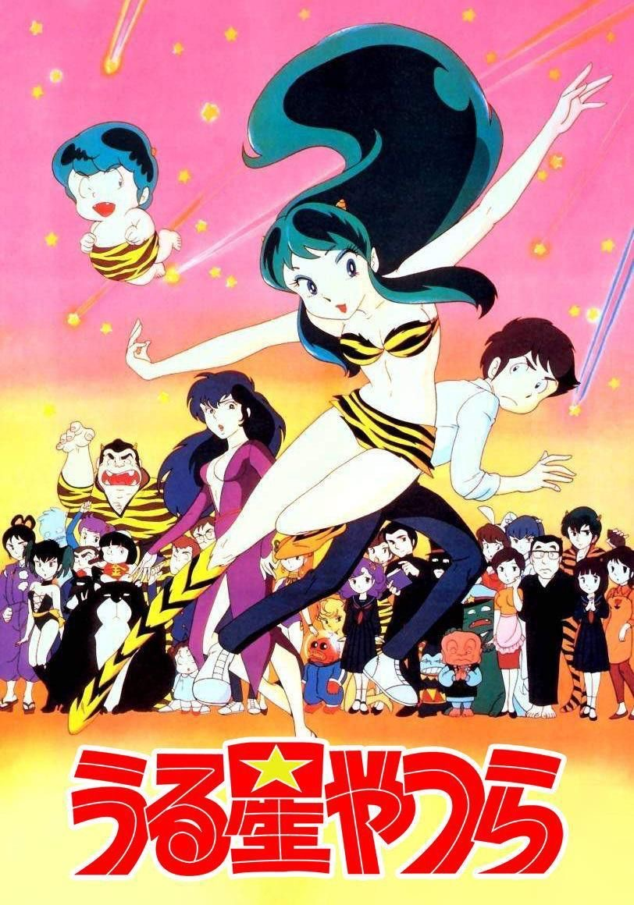
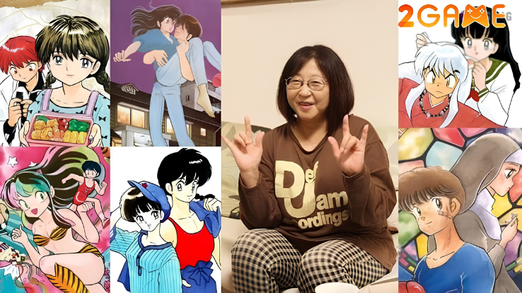

Từ Urusei Yatsura đến Ranma ½ và Inuyasha, Rumiko Takahashi đã tạo nên những nhân vật có sức sống qua nhiều thế hệ. Bà cũng là một trong những mangaka Nhật Bản được vinh danh nhiều nhất trên thế giới.

Bước vào nghề từ cuối thập niên 1970
Rumiko Takahashi sinh ngày 10/10/1957 tại Niigata, Nhật Bản.
Bà bắt đầu sự nghiệp chuyên nghiệp vào năm 1978 với Urusei Yatsura. Tác phẩm nhanh chóng tạo được sự chú ý nhờ sự kết hợp giữa hài hước, tình cảm và yếu tố kỳ ảo.
Đây cũng là giai đoạn Takahashi hình thành phong cách đặc trưng: xây dựng một nhóm nhân vật có cá tính mạnh và đặt họ vào những tình huống liên tục tạo xung đột.

Ranma ½ và thế giới biến đổi đầy thú vị
Sau Urusei Yatsura, Takahashi tiếp tục ghi dấu ấn với Maison Ikkoku và Ranma ½. Trong đó, Ranma ½ xoay quanh Ranma Saotome, một võ sĩ trẻ mắc lời nguyền biến đổi cơ thể khi tiếp xúc với nước lạnh.
Lời nguyền trở thành một phần không thể tách rời trong cuộc sống của Ranma, kéo theo những tình huống trớ trêu và những mối quan hệ phức tạp, đặc biệt là với Akane Tendo. Thông qua sự biến đổi của nhân vật, tác phẩm khai thác những câu chuyện về tình yêu, bản sắc và cách con người nhìn nhận giới tính theo một góc nhìn nhẹ nhàng, gần gũi.
Chính sự kết hợp giữa võ thuật, tình cảm và yếu tố biến đổi cơ thể đã tạo nên nét riêng cho Ranma ½, giúp tác phẩm trở thành một trong những dấu ấn nổi bật trong sự nghiệp của Rumiko Takahashi.

Inuyasha - bước chuyển sang thể loại thần thoại
Inuyasha đánh dấu một hướng tiếp cận khác.
Câu chuyện đưa Kagome, một nữ sinh hiện đại, trở về Nhật Bản thời phong kiến và gặp Inuyasha. Từ đó, tác phẩm kết hợp lịch sử, thần thoại, hành động và tình cảm.
Thành công của Inuyasha giúp Takahashi tiếp cận một thế hệ độc giả mới và tiếp tục củng cố vị trí của bà trong manga quốc tế.

Phong cách xây dựng nhân vật
Nhân vật của Takahashi thường không hoàn hảo. Họ có tính cách nóng nảy, ghen tuông, vụng về hoặc đôi khi ích kỷ.
Những khuyết điểm này khiến nhân vật trở nên gần gũi và tạo ra nhiều tình huống hài hước.
Bên cạnh đó, Takahashi có khả năng duy trì nhịp kể chuyện lâu dài mà không khiến mối quan hệ giữa các nhân vật trở nên đơn điệu.
Thành tựu và giải thưởng
Takahashi hai lần giành Shogakukan Manga Award, lần đầu với Urusei Yatsura và sau đó với Inuyasha.
Bà cũng hai lần nhận Seiun Award. Năm 1994, Takahashi nhận Inkpot Award.
Năm 2018, bà được đưa vào Will Eisner Award Hall of Fame. Một năm sau, bà nhận Grand Prix tại Angoulême International Comics Festival - một trong những giải thưởng danh giá của lĩnh vực truyện tranh châu Âu.
Năm 2020, Chính phủ Nhật Bản trao cho Takahashi Medal with Purple Ribbon nhằm ghi nhận đóng góp của bà cho nghệ thuật.
Di sản của Rumiko Takahashi
Với hơn 40 năm hoạt động, Rumiko Takahashi đã tạo ra nhiều series được chuyển thể thành anime và phát hành quốc tế.

Điểm đáng chú ý trong sự nghiệp của bà là khả năng kết hợp hài hước, tình cảm và fantasy mà vẫn tạo ra những nhân vật có sức sống lâu dài.
Takahashi không chỉ là một nữ mangaka thành công mà còn là một trong những tác giả góp phần đưa manga Nhật Bản đến với độc giả toàn cầu.